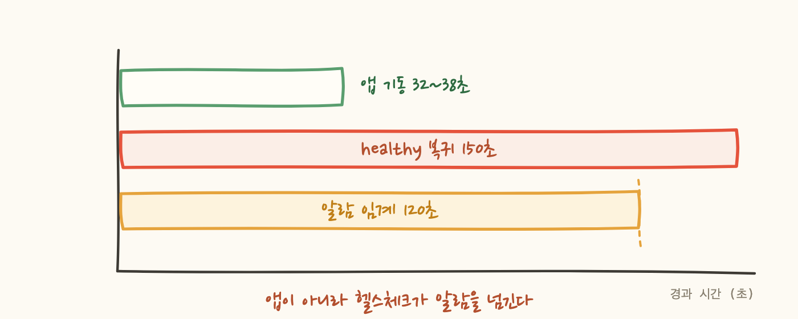
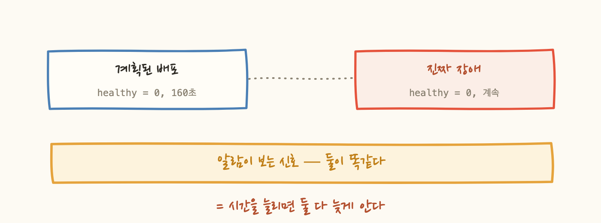
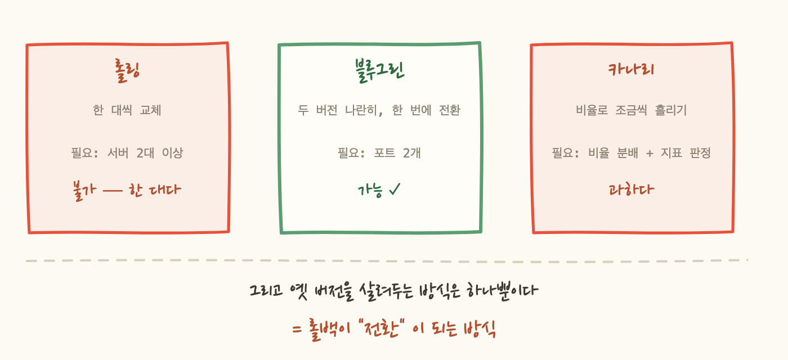

오후에 P1 온콜이 두 번 울렸어요.
붙어서 docker ps를 쳤더니 앱 컨테이너가 33분 전에 생성돼 있었습니다. 16:18 알람과 시각이 맞아요.
장애가 아니었습니다. 개발자가 배포한다며 호스트에 붙어 손으로 컨테이너를 갈아끼운 것이었어요.
배포할 때마다 전화가 오면 결국 둘 중 하나가 됩니다. 배포를 안 하게 되거나, 전화를 안 받게 되거나. 둘 다 나쁘죠. 그래서 이 글은 "알람을 어떻게 조용하게 만들까"에서 시작해 "배포 방식을 어떻게 바꿀까"로 옮겨간 이야기입니다.
당시 배포는 컨테이너를 내렸다가 새로 올리는 방식이었어요. 그 사이에 포트가 비고, 로드밸런서 입장에선 뒤에 아무도 없는 상태가 됩니다.
처음엔 앱 부팅이 느린 줄 알았습니다. 실측했어요.
앱은 35초쯤에 이미 정상 응답합니다. 그런데 로드밸런서가 150초를 더 기다립니다. 30초 간격으로 5번 연속 성공해야 healthy로 인정하니까요.
그러면 배포 한 번에 healthy host가 0인 구간이 160초쯤 생기고, 알람 임계가 120초니 무조건 울립니다.

여기서 선택이 갈립니다. 알람 쪽을 건드리는 방법이 훨씬 쉬워요.
제일 쉬운 건 임계를 2분에서 5분으로 늘리는 것입니다. 한 줄이면 끝나고 배포는 조용해집니다. 그런데 이건 안 됩니다.
시간으로는 계획된 배포와 진짜 장애를 구분할 수 없습니다.
알람 입장에서 둘은 완전히 같은 신호예요. "healthy host가 0인 상태가 N초 지속됨". 배포라서 0이 된 것과 인스턴스가 죽어서 0이 된 것이 신호상 구별되지 않습니다. 임계를 5분으로 늘리면 배포는 조용해지지만 새벽에 진짜로 죽어도 5분을 기다립니다. 얻는 것과 잃는 것이 같은 축에 있어요. 감지 개선이 아니라 감지 포기입니다.
배포 중에만 알람을 억제하는 방법도 있습니다. 파이프라인은 "지금 배포 중"이라는 정보를 알고 있으니 시간으로 뭉개는 것보다 정확해요. 다만 해제를 잊으면 그 알람이 영구 무음이 됩니다. 알람이 없는 것보다 나쁩니다. 없으면 없는 줄 알지만 무음이면 있는 줄 아니까요. 그래서 이건 임시 수단으로만 씁니다.
그래서 원인 쪽을 줄였습니다. 헬스체크 설정을 고쳐 복귀를 빠르게 만들었어요.
세 번째 줄이 반대 방향입니다. 장애를 더 늦게 판정하도록 올렸어요. Interval을 10초로 줄이면 2회는 20초가 돼서 너무 예민해집니다. 그리고 여기가 중요한데, 타깃이 한 대뿐이라 unhealthy 판정이 곧 100% 중단입니다. 여러 대면 하나를 빨리 빼는 게 이득이지만, 한 대면 옮겨갈 곳이 없어요. 성급하게 빼서 얻을 게 없습니다.

여기서 끝낼 수도 있었어요. 전화는 안 오고, 설정 세 줄만 바꿨고, 위험도 없습니다.
그런데 처음 장면으로 돌아가면 문제가 남아 있습니다. 그 배포 과정에 이런 게 없어요.
깨진 이미지를 밀어도 그대로 라이브로 갑니다. 아무도 안 막아요. 헬스체크를 고치면 이 상태가 조용해집니다. 사라지는 게 아니고요.
알람이 멎는 것과 배포가 안전해지는 것은 다릅니다. 증상을 지우는 것과 병을 고치는 것을 구분하지 않으면, 조용해진 위험을 안전으로 착각하게 됩니다.
그래서 배포 방식 자체를 봤습니다. 내려갔다 올라오는 구간이 없는 방식, 즉 무중단 배포입니다.
흔히 쓰는 방식이 셋입니다. 그리고 이 환경에서는 고를 수 있는 게 하나뿐이었어요.

롤링은 서버를 한 대씩 빼서 교체합니다. 그래서 최소 두 대가 필요해요. 이 서비스는 인스턴스 한 대에 컨테이너 하나가 통째로 올라가는 구조라 뺄 대상이 없습니다. 애초에 지금 방식이 "한 대를 빼고 교체"였고, 그게 바로 끊긴 이유였죠.
카나리는 트래픽을 비율로 조금씩 흘려보내며 지표를 봅니다. 좋은 방식이지만 비율 분배를 해주는 계층과 판정할 지표 체계가 먼저 있어야 해요. 배포 때마다 P1이 오는 상태에서 시작할 단계는 아닙니다.
블루그린은 새 버전을 따로 띄워두고 확인이 끝나면 한 번에 넘깁니다. 서버가 한 대여도 포트를 두 개 쓰면 됩니다. 조건이 맞는 게 이거 하나였어요.
조건만 보면 "가능한 게 그거뿐"이라 고른 것처럼 보이는데, 실제로 결정적이었던 건 다른 지점입니다.
블루그린은 옛 버전을 죽이지 않습니다. 새 버전으로 넘어간 뒤에도 옛 버전이 옆에서 계속 떠 있어요. 그러면 되돌리는 일이 "다시 배포"가 아니라 "전환"이 됩니다.
이 차이가 숫자보다 큽니다. 롤백이 40초짜리 재배포면 사람은 망설입니다. "조금 더 보자"가 되고, 그 몇 분이 장애 시간이 돼요. 롤백이 2초면 일단 되돌리고 나서 원인을 봅니다. 순서가 뒤바뀌는 겁니다.
그래서 저는 무중단 배포의 가치가 배포 순간이 아니라 되돌리는 순간에 나온다고 생각합니다. 배포가 매끄러운 건 좋은 부수 효과고, 실제로 사람을 구하는 건 "되돌리기가 싸다"는 사실이에요.
그래서 블루그린으로 방향을 정했습니다. 그리고 AWS에서 이걸 하는 정석은 로드밸런서 가중치입니다. 그런데 준비를 다 해놓고 그 안을 버렸습니다. 2편은 그 이야기와, 롤백을 2초로 만든 방법입니다.